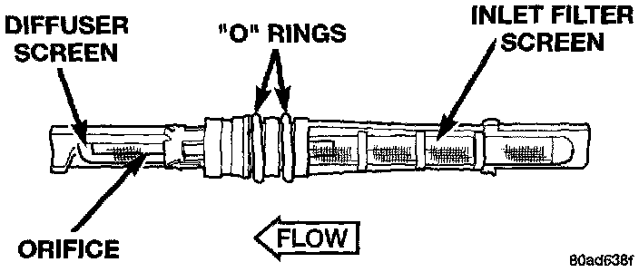

Expansion Block/Orifice Tube: Description and Operation
SYSTEM OPERATIONFixed Orifice Tube
Fig.4 Heater-A/C Components (4.0L Engines):

The fixed orifice tube is installed in the liquid line between the outlet of the condenser and the inlet of the evaporator.
The fixed orifice tube is used to meter the flow of liquid refrigerant into the evaporator coil. The high-pressure liquid refrigerant from the condenser expands into a low-pressure liquid as it passes through the metering orifice and diffuser screen of the fixed orifice tube.
Fixed Orifice Tube - Typical:

The inlet end of the fixed orifice tube has a nylon mesh filter screen, which filters the refrigerant and helps to reduce the potential for blockage of the metering orifice by refrigerant system contaminants. The outlet end of the tube has a nylon mesh diffuser screen. The 0-rings on the plastic body of the fixed orifice tube seal the tube to the inside of the liquid line and prevent the refrigerant from bypassing the fixed metering orifice.
The fixed orifice tube cannot be repaired and, if faulty or plugged, the liquid line assembly must be replaced.